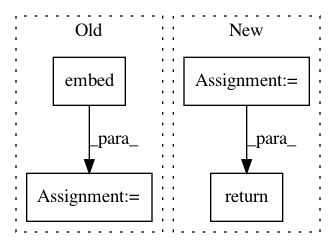

78eba7b3f82b8420deac3cd28318dbfead0f9b9e,python/baseline/pytorch/seq2seq/model.py,Seq2SeqModel,encode,#Seq2SeqModel#Any#Any#,160
Before Change
return self.decode(rnn_enc_tbh, input["src_len"], final_encoder_state, input["dst"])
def encode(self, input, src_len):
embed_in_seq = self.embed(input)
//if self.training:
packed = torch.nn.utils.rnn.pack_padded_sequence(embed_in_seq, src_len.data.tolist())
output_tbh, hidden = self.encoder_rnn(packed)
output_tbh, _ = torch.nn.utils.rnn.pad_packed_sequence(output_tbh)
//else:
// output_tbh, hidden = self.encoder_rnn(embed_in_seq)
After Change
example[key] = tensor
if self.gpu:
example[key] = example[key].cuda()
if "tgt" in batch_dict:
tgt = torch.from_numpy(batch_dict["tgt"])
example["dst"] = tgt[:, :-1]
example["tgt"] = tgt[:, 1:]
example["dst"] = example["dst"][perm_idx]
example["tgt"] = example["tgt"][perm_idx]
if self.gpu:
In pattern: SUPERPATTERN
Frequency: 3
Non-data size: 4
Instances
Project Name: dpressel/mead-baseline
Commit Name: 78eba7b3f82b8420deac3cd28318dbfead0f9b9e
Time: 2018-10-30
Author: dpressel@gmail.com
File Name: python/baseline/pytorch/seq2seq/model.py
Class Name: Seq2SeqModel
Method Name: encode
Project Name: uber/ludwig
Commit Name: a0d860d4ec3854c37c352613bf93913b6302327f
Time: 2020-04-17
Author: w4nderlust@gmail.com
File Name: ludwig/models/modules/category_encoders.py
Class Name: CategoricalEmbedEncoder
Method Name: call
Project Name: dpressel/mead-baseline
Commit Name: 78eba7b3f82b8420deac3cd28318dbfead0f9b9e
Time: 2018-10-30
Author: dpressel@gmail.com
File Name: python/baseline/dy/seq2seq/model.py
Class Name: Seq2SeqModel
Method Name: encode